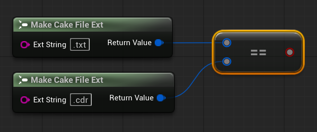
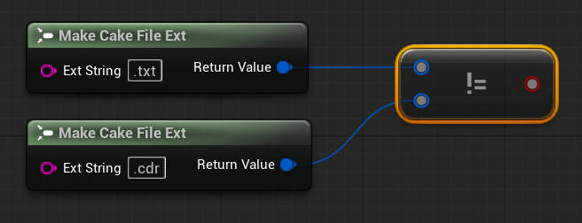

File Extensions
Overview
CakeFS offers FileExtension objects provide a type-safe way to extract, examine, classify, and manipulate file extensions.
Source Code Information
FCakeFileExt is defined in CakeIO/CakeFileExt.h.
All of the following C++ examples will assume this has already been included.
File Extension Classification
Before we look at the File Extension object interface, it is important to understand how CakeFS classifies file extensions. CakeFS defines two distinct types of file extension: single file extensions and multi file extensions.
Single File Extension: A file extension that contains only one file extension component: e.g.,
.txtor.binMulti File Extension: A file extension that contains more than one file extension component: e.g.,
.cdr.txtor.bin.dat.zip
CakeFS represents file extension types via the enum ECakeFileExtType. File extensions that are empty will have the value None, file extensions with one component will be assigned the value Single, and file extensions with more than one component will have the value Multi.
Basic Usage
Building File Extension Objects
We build an FCakeFileExt object by supplying a string that represents the file extension we want to store.
Note
It doesn't matter if we include the leading . character for our file extension input arguments.
To create an FCakeFileExt by extracting the file extension from a file name, we can use the static function BuildFileExtFromFilePath:
Warning
Many operating systems allow for the . character to be in directory names as well. If the leaf component of the path you submit is not a file but contains a . character, you will get an incorrect file extension extracted.
We can use Clone to make an independent copy of a CakeFileExt object:
Reading the File Extension String
To read the file extension string we use GetFileExtString:
To get an independent copy of the file extension string, we use CloneFileExtString:
Modifying the File Extension
To change the extension string to another string that represents a file extension, we can use the member function SetFileExt, submitting either a string or an FCakeFileExt object.
Warning
SetFileExt is designed to accept strings that only represent file extensions. (e.g., ".txt" or ".bin.dat"). It is not meant for path-like strings that contain file names and file extensions. (e.g., "data.bin.dat", "items/desc.txt") Use SetFileExtFromFilePath for that instead.
To set the file extension using a file path, we can use the member function SetFileExtFromFilePath:
We can check if a CakeFileExt holds any file extension via the member function IsEmpty:
To clear any existing file extension, we can use the member function Reset:
Note
Reset takes an optional parameter that can reserve a new size for the internal FString that will hold the file extension string. Leave this at zero if you don't require a specific reserved size.
Combining File Extensions
To create a CakeFileExt object that combines two other file extensions together, we use Combine:
We can append another file extension onto a preexisting CakeFileExt object with CombineInline:
Classifying a File Extension
We can get the file extension classification of a CakeFileExt via ClassifyFileExt, which returns the corresponding file extension type as an ECakeFileExtType enum value:
File Extension Equality
We check file extension equality using operator== and operator!=:
To check if one FileExtension object is equal to another, we use IsEqualTo:

To check if one FileExtension object is not equal to another, we use IsNotEqualTo:

Advanced Usage
Viewing a File Extension in Single form
Sometimes we might want to only take into account the last component of a file extension. To do this, we can use CloneSingle, which will return a CakeFileExt object that contains the final component of its source file extension.
In the example above, each cloned CakeFileExt will have the extension .txt.
Note
As the examples show, CloneSingle will always return the trailing component on a file extension (assuming there is one), so it is safe to use on both single and multi extensions. This means that CloneSingle is a valuable tool when you are processing file extensions and only care about examining the trailing extension component regardless as to how many actual extensions the file might have.
Extracting a File Extension in Single Form
There are functions that allow us to extract only the trailing file extension component from a given file path.
We can extract just the trailing extension component from a file name using BuildFileExtFromFilePathSingle:
In the example above, the CakeFileExt will have the extension .db.